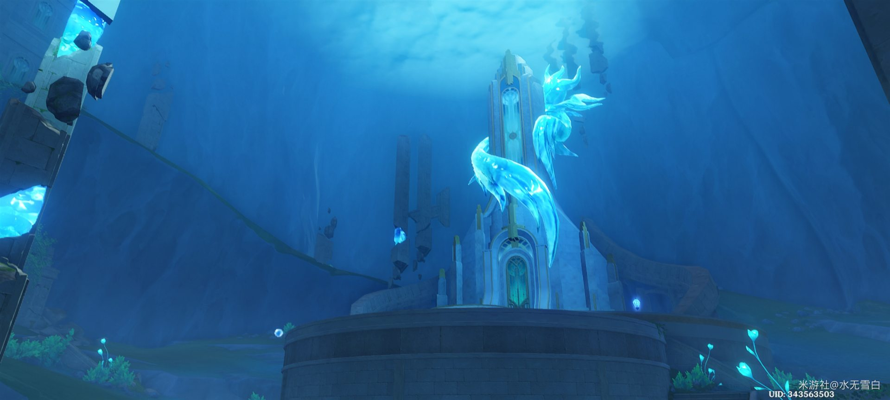
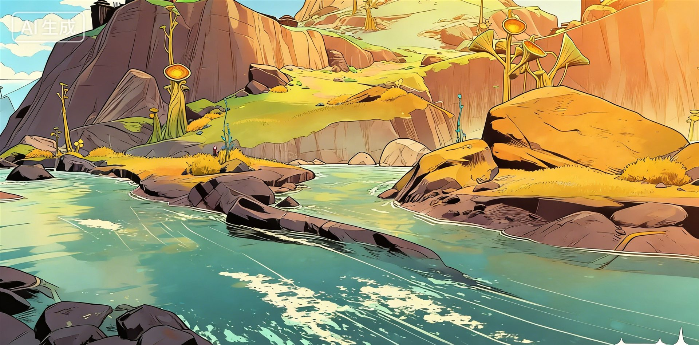
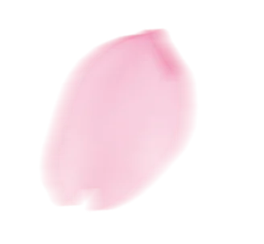
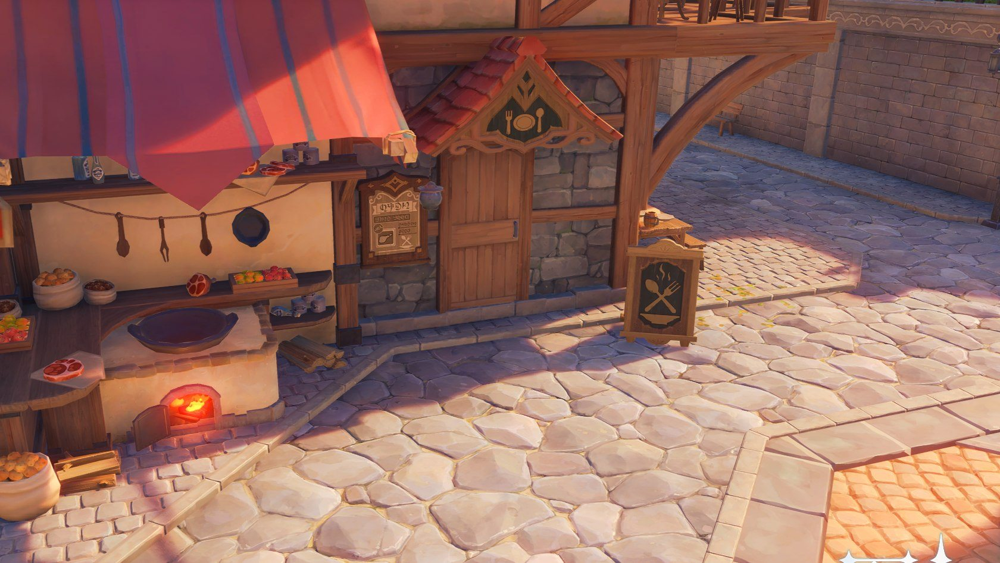
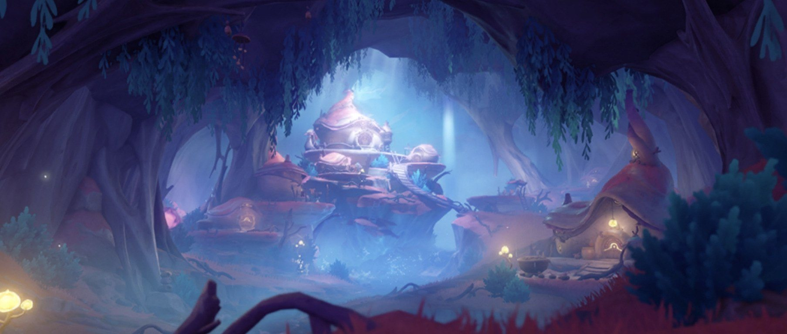
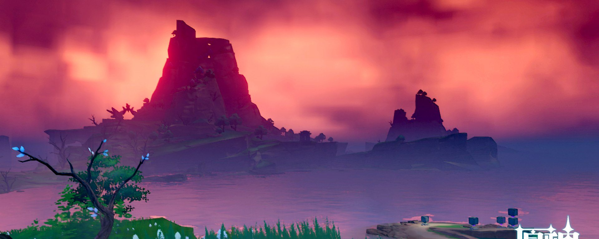

元素手帐
首页
文章
作品
项目
课表
游戏
茶室
关于
友链
⌕
◐
❖
今天也值得记一笔
日常、心情，和那些不想忘掉的小事
慢慢写，慢慢生活
最新文章
列表
网格
置顶

搬进来之后的第一件事
空房间最麻烦的不是没有家具，而是不知道光从哪边进来。住了两周才把桌子挪到对的位置。
生活随笔
日常
2026-02-14
我
8 分钟

关于早起这件小事
试过很多方法，最后有用的只有一条：把闹钟放到必须下床才能关的地方。附一份我用了半年的晨间流程。
日常
习惯
2026-02-08
我
9 分钟
一本读完想立刻重读的书
有些书是拿来"用"的，这本是拿来反复翻的。记下几个被打动的段落，以及我为什么在最后一章停了很久。
读书笔记
摘抄
2026-02-02
我
11 分钟

周末做一次慢炖
不用守着锅，两小时之后它自己就好了。写清楚配比与时间，下次照着做不会失手。
厨房记录
食谱
2026-01-26
我
12 分钟
点击右侧播放器开始播放
♪
1
2
3
›
00:00:00
系统已稳定运行：
0 天 0 小时
HTML
原生 CSS
原生 JS
零构建
离线可用
静态站点 · 不需要后端 · 技术栈详见「关于」
↑
⚙
主题色相
240
壁纸模式
横幅
全屏
透明
无
卡片描边
关
开
壁纸透明度
卡片透明
壁纸柔化
关
开
氛围特效
樱花
萤火
弹幕
涟漪